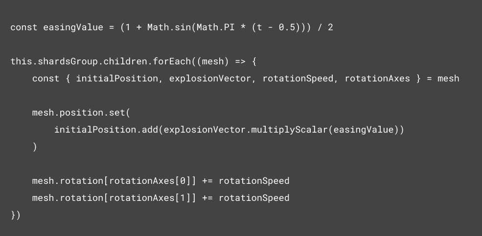
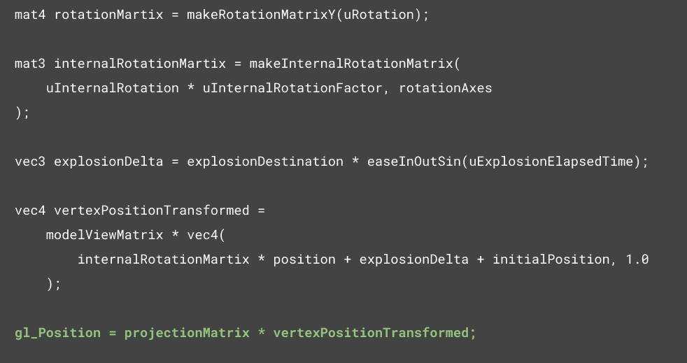
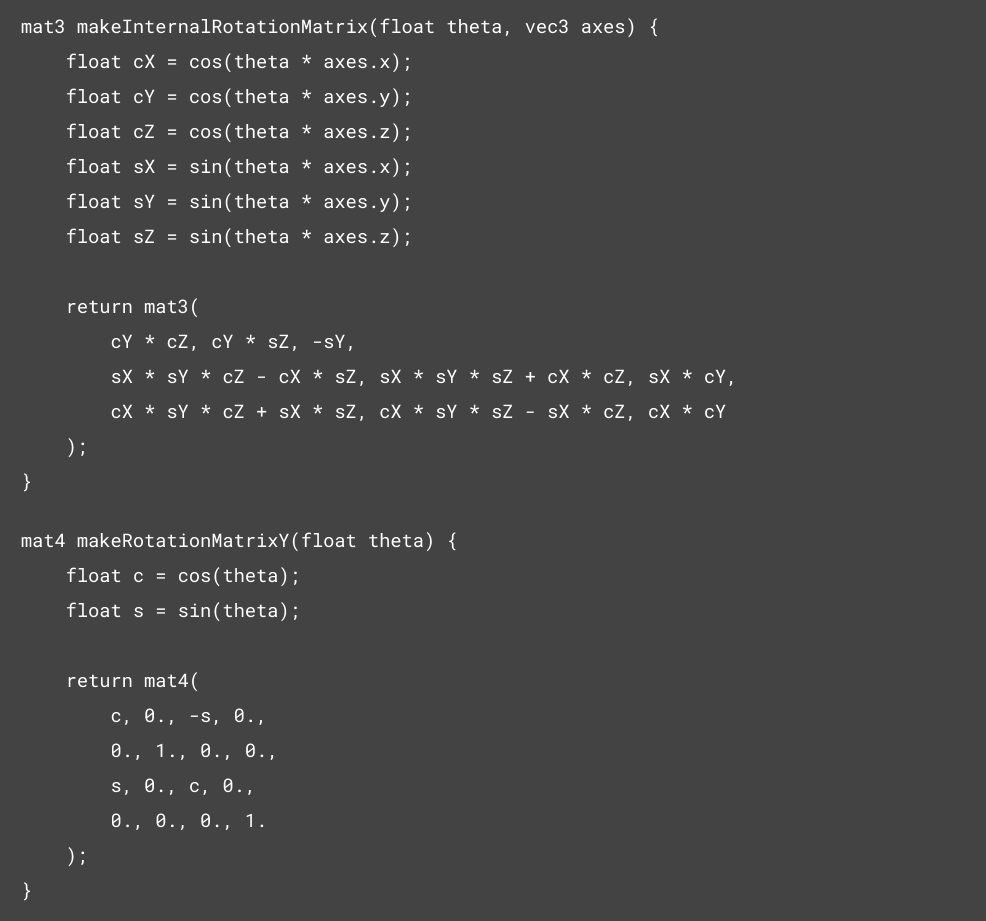
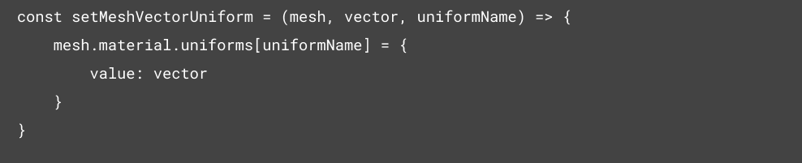
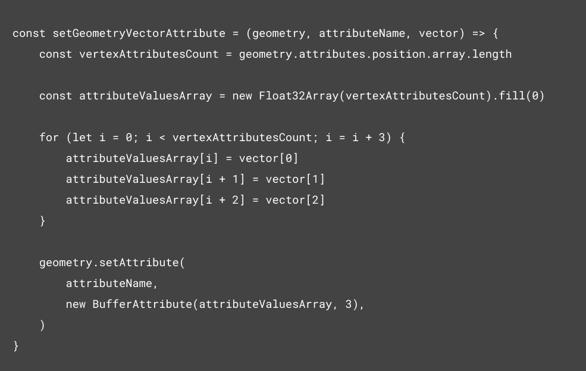

WebGL: common optimisation techniques
Intro
There are a lot of different optimization techniques in computer graphics - some of them are pretty common, some are highly dependent on a specific case.
The most frequently used optimization techniques in WebGL include the following:
- Transfer of calculations from javascript code to shaders.
- Optimization of rendering of a large number of objects.
Now I would like to demonstrate these optimization techniques using the following animation as an example:
Animating objects is one of the common use-cases in computer graphics. For example, when you want to, move some objects or transform their geometry or color, etc.
Similar tasks are often solved directly in JavaScript due to the simplicity of implementation. However, this can be a weak point in the entire application performance.
Let's take a closer look at the calculations used in our animation example.
Getting coordinates as a function of time looks quite simple:
However, we should keep in mind that all these calculations will be performed for each frame and they depend on the number of animated objects.
What does the animation look like before optimization? To demonstrate this, let’s increase objects count to about 2500 objects, each consisting of 4 vertices.
Perform calculations on GPU
As you can see, the frame rate is quite low and the animation doesn’t look smooth. In the browser profiler, you can see that the CPU is almost completely loaded (green chart shows frames per second 0-60 and yellow one is the CPU load 0-100%).
In order to reduce the CPU load, we will transfer the animation to the graphics processing unit (GPU) using vertex attributes and uniform variables.
The transformed object coordinates are calculated according to the following data:
- explosionDelta - a translation vector used to determine the current position of an object in each moment of time.
- initialPosition - initial position of the object in the world coordinates.
- internalRotationMatrix - a matrix used to rotate an object
WebGL uses matrix calculus. This is not that difficult, but may take some time to adapt. Here is an example of creating the rotation matrices that we used above to transform the coordinates of animated objects:
On this video you can see the result of our optimization after transferring calculations to the shaders. Now the animation is much smoother, but the frame rate is still far from 60 FPS.
Optimize "Lots of Objects" rendering
Handing a large number of objects is a significant impact on performance.
Render calls are performed for each object that needs to be drawn and are quite resource intensive. Therefore, it is always advisable to minimize the number of draw calls. This can be achieved through combining similar objects by merging their geometries.
This approach slightly changes the way data is conveyed to shaders, for example, in transforming the coordinates of each part of such an aggregate object. In particular, uniform variables are no longer suitable for this purpose since their values are common to all vertices.
In this case, we use attributes that enable us to set data on each vertex separately. Let us compare the code that sets the coordinates of objects before and after merging geometries. Passing coordinates to shaders using uniform variables:
And using attributes:
The second method looks more cumbersome, but provides more flexibility when conveying geometry data of objects
The result of the optimization described above can be seen in the video. The result is as follows. As you can see, we managed to achieve 60 FPS and the animation is now smooth enough. This also reduced CPU and GPU load drastically.
Conclusion
Using the approaches outlined in this article, you can use WebGL for a number of applications, including:
- Visualizing data, for example, cartographic, statistical or data obtained from various scanners used in medicine, robotics, etc.
- Implementing complex design solutions.
- Developing games.
- Creating graphic editors.
- Image processing.
- Developing interactive presentations e.g. of manufacturers of automotive equipment or mobile devices.
- Implementing virtual/augmented reality projects.
WebGL is a quite versatile tool which mainly requires a graphics processor and imagination.
I hope this article helped you a bit on your way to mastering computer graphics!